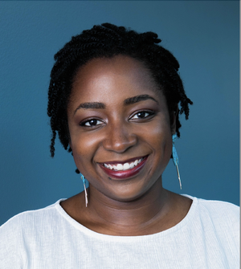

Sholei Croom is a 3rd year Ph.D. student in Psychology and Brain Sciences at Johns Hopkins University. Their research mainly investigates the interactions between perception, intuitive physics and action understanding, and they will introduce the main framework of our symposium, Critical Vision Science.
Dr. Pawan Sinha
Pawan Sinha is a professor of visual neuroscience at MIT. Using a combination of experimental and computational approaches, his lab’s research focuses on understanding brain development and plasticity. Towards this goal, he works not only with children undergoing typical developmental progressions, but also those whose trajectories have been unusual. In doing so, Pawan and his lab members are able to pursue basic scientific questions while also helping bring positive changes in the lives of marginalized children.
Dr. Jasmine Kwasa

Jasmine Kwasa is an NIH K00 post-doctoral fellow in the Neuroscience Institute at Carnegie Mellon University (CMU). Her current research seeks to develop neurotechnologies, such as EEG and fNIRS, optimized for coarse, curly hair and dark pigmentation (melanin) with collaborators at CMU. She is also a neuro-ethicist and writes about the future of inclusive neurotech and the history of racial bias in neuroscience, medicine, and technology.
Dr. Joel Martinez
Joel Martinez is a postdoc in data science and psychology whose work attempts to work through the methodological and political consequences of the philosophies our research programs commit to (whether explicitly or not) - with a focus on contemporary issues in racism, migration, and sexuality discourses.
Dr. Vassiki Chauhan
Updated soon!
Dr. Kathryn Graves
Updated soon!
Dr. Kimele Persaud
Kimele Persaud is an assistant professor of Psychology at Rutgers University - Newark. Her work focuses on understanding the processes and mechanisms that underlie visual working and long-term episodic memory. Specifically, she employs diverse stimuli to evaluate the contribution of prior knowledge and expectations for the statistical regularities of the environment to episodic memory. She also uses Bayesian and computational methods to investigate whether differences in knowledge and expectations, as a function of development, culture, and expertise differentially influences the reconstruction of events from memory. Kimele has a strong commitment to attracting and training students from minority backgrounds to science at all stages in the leaky academic pipeline. She believes that promoting diversity and broadening participation in the sciences will help ensure the vitality of the scientific enterprise, creating new opportunities to engage deep theoretical questions of vision and cognition from diverse perspectives.
Dr. Eline Kupers
Eline Kupers is a vision scientist and currently a postdoctoral researcher at Stanford University in the Psychology Department. Her work focuses on building computational models of the human visual system to understand visual perception and its underlying neural mechanisms, and how these processes are modulated by higher cognition, using neuroimaging (EEG/MEG/MRI), psychophysics, and computaitonal modeling. Eline cares deeply about mentorship and fostering a diverse, inclusive, and safe community in academia, where everyone thrives and get the support they need. She is grateful to meeting and working with this excellent group of scientists and is very excited to co-organize the Critical Perspectives Symposium together.